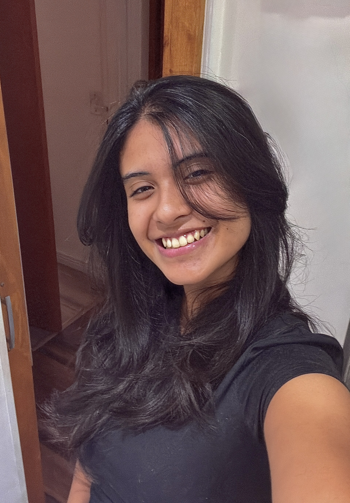

Desenvolvedora Back-end Júnior
Sou estudante de Sistemas de Informação, atualmente cursando o 3º semestre. Atuo como estagiária no Centro Brasileiro de Pesquisas Físicas (CBPF). Direciono minha formação para desenvolvimento web, com foco em back-end utilizando linguagem Java e framework como Spring Boot. Meus estudos também corroboram para o aprofundamento e experiência em Linux e tecnologias web, buscando desenvolver aplicações cada vez mais estruturadas e eficientes. Este portfólio reúne meus primeiros projetos e evolução como desenvolvedora.

Habilidades & Tecnologias
Habilidades adquiridas e em aprendizado
Minha Jornada
Minha trajetória de aprendizado e crescimento profissional.
Certificação Back-End com Java
Bootcamp DIO - Santander 2025 - 78H
Curso de extensão focado em desenvolvimento back-end com Java e com participação em projetos práticos no versionamento do gitHub .
Projeto de Extensão - Graduação
Projeto de Extensão - Senac - Banco de dados, Prototipo 1°
Projeto LIMS - Laboratory Information Management System focado em otimização de processos no setor de logística da empresa referente. Modelagem Swing java
Certificação de Excel
Curso Em video - 40H
Curso de extensão focado em desenvolvimento de habilidades intermediarias em Excel.
Projeto de Extensão - Graduação
Projeto de Extensão - Senac - Banco de dados, Prototipo 2°
Projeto LIMS - Laboratory Information Management System - Estrutura em Spring Boot